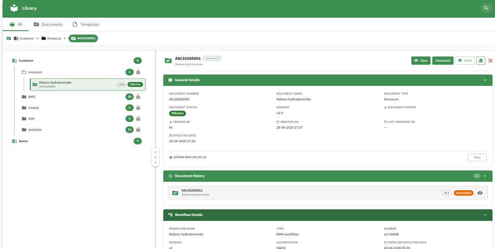

NoteIQ controls the whole document lifecycle, from authoring and review to controlled printing and archival, on one audit-ready system.
Storing documents is easy. Keeping them controlled is the hard part.
You already have somewhere to keep documents. The harder problem is keeping them controlled: one versioned source of truth, every change and approval on the record, and every copy, share and linked training tied back to it. From authoring to archival, that is what NoteIQ is built to do.
This is the difference from the document system you already run. In NoteIQ a printout is a controlled, traceable event: the package is built and printed against a trigger, and every copy and reprint is logged. A printed record is as governed as the one on screen.
Event-based printing with end-to-end traceability, our key differentiator.
Every document lives in one place, versioned and access-controlled, with its status, history and workflow on the record. What is effective, what is superseded and who owns it is never in doubt.

The document library: status, version, history and workflow, on one record.
The same platform, three views: authoring in a built-in editor, moving a document through review and approval, and tracking the tasks that carry it to effective.
Move any number of processes onto NoteIQ, and give each one its own template and review-and-approval workflow. The system bends to your SOPs, not the other way round.
Each process you add gets its own template and its own review-and-approval workflow.
Fully configurable, with templates you own, not templates locked to a vendor.
It stands up without a lengthy build, so you are live in a matter of weeks, not quarters.
Documents do not live in isolation. NoteIQ pushes approved documents into training, connects to the systems you already run, and lets you open a controlled window to outsiders without handing over the keys.
Native integration with the NoteIQ training module: when a document or a new version is approved, the training item is created automatically, so employees are trained on the current version.
Connects to the systems you run on, including SAP, QMS and LIMS, so documents move with your operation.
Share selected documents with regulators or customers for online or onsite review, through the platform, without giving them a licence.
NoteIQ drafts documents from your templates, proofreads them for inconsistencies and compliance risks, and summarises them for review. A qualified person reviews and approves. The AI capabilities run on PivotAI, the AI layer inside PivotOS.
Your content stays yours: it is never used to train foundation models and stays isolated to your organisation.
Drafts compliant, structured documents from your configured templates.
Flags inconsistencies and compliance risks and suggests improvements.
Creates concise summaries so reviewers grasp a document quickly.
Nothing critical is released without a human reviewer in the chain.
Every version, approval, printout, reprint and executed record is timestamped and traceable, aligned to ALCOA+ and 21 CFR Part 11. The paper trail and the system are the same trail.
Read the AI Trust Centre for how we govern AI in regulated work.
We will show controlled printing, the Virtual Data Room and training integration on your own SOPs.